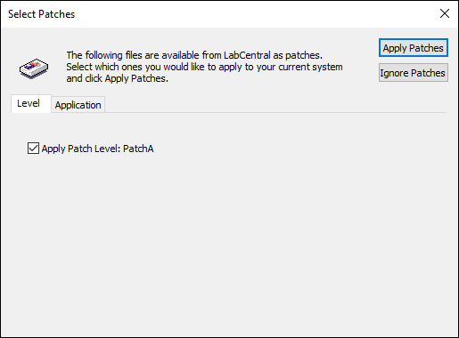
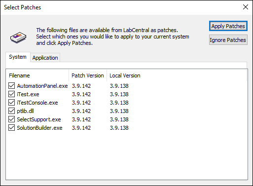
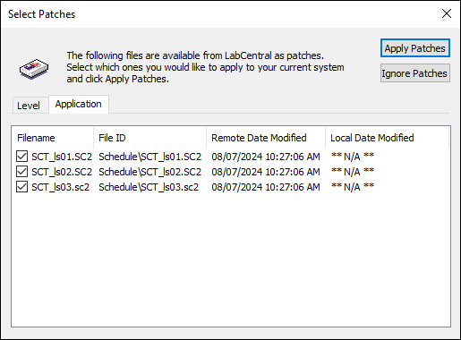

iTest User's Guide
The auto-patching feature allows you to distribute system and solution patch files to multiple test systems as well as update the installed iTest and/or LabAgent software. These patch files are configured from a centralized location like LabCentral and are pushed down to the applicable test systems.
The following patch file types are available for auto-patching:
In order to trigger auto-patching on the test system, the following requirements must be met prior to launching an iTest program:
selectsupport config.ini setting is set to TRUE.AUTOPATCHMODE config.ini setting is set to AUTO, MANUAL, or PROMPT.Auto-patching is triggered from SelectSupport.exe. Installer, system, and solution patching is available only if there are no other iTest programs running when the Select Solution dialog appears. If there is already an iTest program running (e.g., AutomationPanel or SolutionBuilder), and a different solution other than the currently running solution is opened, then only solution file patching will be available. If the same solution is selected, then auto-patching will not be available.
The AUTOPATCHMODE config.ini setting is used to determine how automatic patches are applied. The following modes are available for automatically patching the system:
Patch Modes
| Mode | Description |
| NONE | The automated patch system is not used (i.e., disabled). This is the default setting. |
| PROMPT | The system checks for new patches upon startup. If new patches are available, then the user can select which patches to apply via the Select Patches dialog. Depending on the system's configuration, application of the patches can only be ignored a certain number of times. For more information, refer to the AUTOPATCHIGNOREMAX description. |
| AUTO | The system is automatically patched using the available patch files found in the AUTOPATCHFOLDER location.There may be a period of time where the Select Solution dialog is open and does not seem to be responding. This is due to the HaspUpdate.bat file running and is expected to occur during auto-patching if Hasp-related files are being patched. |
| MANUAL | The Auto Patch button is added to the Select Solution dialog. Clicking this button checks the patch folder for any new patches. If there are new patches, you can select which files to apply via the Select Patches dialog. |
The first time you apply patches, the $SYSTEMDIR\Patches folder is created. When new system or solution patches are applied to your system, any files that were replaced are backed up to this folder. The Patches folder contains the Patches.log file which displays all patch activity, including subfolders that contain any files that were overwritten on each day. Note that you can clean up or delete the contents of this folder, as necessary.
Installer patches are used to update out-of-date iTest and/or LabAgent software on the test station. These patches are applied before any system patches and are configured from LabCentral. Once applied, the InstallRunner.exe tool will run the setups for iTest and/or LabAgent.
When using PROMPT or MANUAL mode, the Select Patches dialog will display with the installer patch level. Check the patch level to apply, and then click Apply Patches to apply the installer patch.
Select Installer Patch Level

System patching is used to distribute patches to the $EXECUTEDIR. These patches are applied after any installer patches and may override files from the installer patch. The patch process may require automatically updating the Hasp software via HaspUpdate.bat. This requires elevated (i.e., administrator) permissions when patching. If these permissions are not available and a patch for the Hasp software is present, an error message will display (unless patching silently), indicating that HaspUpdate.bat must be manually run as an administrator, and the $SYSTEMDIR\Patches\Patches.log file is updated with the error message.
 |
NOTE: | The patching system uses the INI.DLL file, so this file cannot be automatically patched. If it is included in your patch folder, then it must be downloaded and replaced manually. |
When using PROMPT or MANUAL mode, the Select Patches dialog will display with the list of system patches. The list of system patches is composed of files located in the AUTOPATCHFOLDER; this folder may be a local or a network folder. Select which patches to apply under the System tab, and then click the Apply Patches button to apply the patches.
Select System Patches

Solution patching utilizes file syncing with LabCentral, where you can use iTest to share files with LabCentral and distribute these files globally to applicable systems. Setup for solution patching is handled through the LabCentral interface and utilizes the LabCentral configured settings from the test system's $SYSTEMDIR\moduledefinition.xml and $SYSTEMDIR\config.ini files. For more information, refer LabCentral's Managing Test Solution Patches documentation.
If the moduledefinition.xml file exists in the test system's $SUPPORTDIR, then the settings configured in LabCentral will be overridden; refer to the Centralizing Files with Moduledefinition.xml documentation for more details.
For more information about file syncing, refer to the Synchronizing Files with LabCentral.
|
NOTE: | LabAgent must be running in order to apply solution patches. |
Files from the network folder are downloaded to test systems in the following scenarios:
When using PROMPT or MANUAL mode, the Select Patches dialog will display with the list of solution patches. Select the patches to apply, and the click Apply Patches to apply the solution patches.
Select Solution Patches
